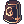
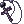
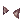

OXD's PvM Soul Reaper Guide
Heya everyone, OXD here. I have been playing RO for years now, hopping from server to server. Soul Linker (SL) was one of my favorite classes to main back in the pre-renewal days and after playing in renewal for few years, I was super excited when Soul Reaper (SR) was announced and was finally coming. I love the theme and aesthetics of Soul Linker/Reaper, not to mention they compliment my preference on playing support classes (minus the fact they can also deal okay-ish damage). Without further ado, let's get the guide started.
| Job Class | |||||||||||||||||||
|---|---|---|---|---|---|---|---|---|---|---|---|---|---|---|---|---|---|---|---|
| Job Base: | Taekwon | ||||||||||||||||||
| Written By: | OXD | ||||||||||||||||||
| |||||||||||||||||||
Preface
Why play Soul Reaper?
Soul Reaper, often called as SR, provides your team with buffs like none others. Their gimmick skills makes them a valuable support and their versatility to deal with different kind of elements proves them as a potential DPS. SRs are also naturally "tanky" in a way because of how their skills interact with each another, which is also another solid point to be proud of.
Is Soul Reaper newbie-friendly?
They are not necessarily newbie-friendly, no. Their skills are not simple like Arch Bishops or Minstrels, and they require good gears to function as a consistent DPS. Though if you really like playing Soul Reapers, they can do just fine even for newbies and or new players.
Is Soul Reaper viable end-game?
Yes, very much yes. People severely underrate the capabilities of SR, and while this hurts SR players one way or another, SR is still pretty much a viable class for end-game content.
With those being said, Soul Reaper definitely has their own pros and cons as listed below:
| Pros | Cons |
|---|---|
|
|

For the last point in the cons, being underrated matters when it comes to recruitment in random parties. Soul Reapers do not have the highest DPS nor the most important skills as a support, but they are just different in their own way. The fact that you need  Soul Linker Spirit (by having another Soul Reaper/Linker in the party) to unlock your full supporting potential hurts them because of their unpopularity, you are less likely to achieve your full supporting capabilities.
Soul Linker Spirit (by having another Soul Reaper/Linker in the party) to unlock your full supporting potential hurts them because of their unpopularity, you are less likely to achieve your full supporting capabilities.
Stats
Soul Reaper is a caster by nature, so their stat builds don't really differ from one build to another unless you are playing meme . Here is the stats priority for Soul Reaper, with highlighted stats being more important than the others: Illusion Counter Dagger build
Illusion Counter Dagger build
| Stats | Priority | Notes |
|---|---|---|
| Soul Reapers use STR for:
The only use for this stats is for weight limit as a Soul Reaper, as ATK does almost nothing (unless you are playing the meme build I mentioned above). Soul Reaper does not use catalyst like other classes, so you only really want this when you carry heavy stuff | ||
| Soul Reapers use AGI for:
Having high attack speed allows you to chain your skills more efficiently, which is especially important if you are being a DPS Soul Reaper. Depending on your gears, you can shave off some agility from your base stats. | ||
| Soul Reapers use VIT for:
Never a bad stats to get for any class as it boosts your HP, especially as Soul Reaper because your base HP pool is awful. | ||
| Soul Reapers use INT for:
Soul Reaper SP usage is pretty crazy, not to mention this stats also boosts your cast time which is all around useful. Also useful to boost MATK for DPS build | ||
Soul Reapers use DEX for:
This stat reduces cast time twice as effective as INT does and attack speed less than AGI. Depending on your gears, you either want this stats or none at all | ||
Soul Reapers use LUK for:
Usually regarded as a "leftover" stats, but considering how |
The freedom is yours to setup your own stat build; it is not set in stone since stat build varies heavily depending on your equipment and also your build.
Skill Build
Here is the breakdown of skills and what to get, all the way from the bottom, starting from Taekwon:
Taekwon
| Taekwon Skills | |||
|---|---|---|---|
| Skill | Skill Type | Notes | Recommended Level |
 Sprint Sprint
|
One of your mobility tool. The usage of Spurt also helps you to level up from Taekwon super fast. | ||
 Tumbling Tumbling
|
Gives you extra survivability from ranged and magic attacks. Always good to have. | ||
 Flying Side Kicks Flying Side Kicks
|
Often referred as FSK, this is your primary leveling skill as Taekwon, and also a pre-requisite for Tumbling, so take it!
|
||
| Peaceful Break | Pre-requisite for Warm Wind so you gotta take it. Otherwise it does not have much use these days. | ||
| Happy Break | Now unlike Peaceful Break, you will want to maximize this as DPS SR since  Taekwon Shadow Shield [1] gives you 3% MDEF pierce per level. Unless you are opting for the support build, then you can just dump your excess skill point here. Taekwon Shadow Shield [1] gives you 3% MDEF pierce per level. Unless you are opting for the support build, then you can just dump your excess skill point here.
|
||
 Kihop Kihop
|
Useless for SR except for Warm Wind pre-requisite. Nothing else to add. | ||
| Warm Wind | Imagine having the power to manipulate 7 elements on your magic attacks! This skill basically does it, which makes it a must get for DPS SR build. It's not like you have any other skill points to spend on as Support build, either. | ||
 High Jump High Jump
|
Yeets yourself forward, very good mobility skill if you know how to use it. It's basically  Back Slide but forward and farther. Back Slide but forward and farther.
|
||
 Literally Literally  other other  kicks kicks  and this and this
|
Do me a favor and don't take them, at all. You can't use them as SR and leveling as Taekwon is super easy with Spurt + Warm Wind + FSK. | ||
- You get Spurt buff by re-activating Sprint again while using it. Also you need to be wearing no weapon to get it.
- Using Flying Side Kicks while on Sprint increases its damage. All the more if you have Spurt buff active.
- You can use /bingbing /bangbang command to control your High Jump direction, similar to how good GXes use Back Slide.
Soul Linker
| Soul Linker Skills | |||
|---|---|---|---|
| Skill | Skill Type | Notes | Recommended Level |
 Kaizel Kaizel
|
Super important to have as it virtually makes you unkillable. Imagine having unlimited amount of  Token of Siegfried, this skill is basically that Soul Linker Spirit active. Token of Siegfried, this skill is basically that Soul Linker Spirit active.
|
||
 Kaahi Kaahi
|
 Energy Coat but instead of reducing damage, it heals you. Important to have since it increases your sustain by A LOT. Granted, there's a huge drawback early on when using it as it drains your SP like mad. It gets better later on though so really no reason not to take it. Energy Coat but instead of reducing damage, it heals you. Important to have since it increases your sustain by A LOT. Granted, there's a huge drawback early on when using it as it drains your SP like mad. It gets better later on though so really no reason not to take it.
|
||
 Kaupe Kaupe
|
A solid skill to give you a breather. Evaded attacks via this also procs Kaahi heal, so it is useful when you are trying to heal yourself back up.
|
||
 Kaina Kaina
|
Increases your max SP which isn't bad, but just level it up if you have spare skill points to spend. | ||
 Eswoo Eswoo
|
Mini me as a skill! It helps you to single out troublesome enemies, makes you an excellent 1v1 combatant in PvM scenario. Good to take as both Support and DPS build. | ||
| Eska | Cuts down the target's ASPD significantly while giving them tiny bit of resist. Same like Eswoo, it makes your 1v1 scenario in PvM much more manageable.
|
||
 Estin, Estun, and Estin, Estun, and  Esma Esma
|
Your primary leveling tool if you decide to pursue the solo path. Esma element is endowable by Warm Wind which is a huge plus compared to Mages' bolt skills. You need to chain them since it is Esma requirement, so it goes like:
|
Estin for Support 10 on Esma for solo leveling as DPS | |
 All All  the soul the soul  links links  skills skills  noone noone  remembers remembers  because because  there there  are are  too too  many many  of of  them, pls them, pls  help help
|
Not gonna lie, I am not gonna explain every single function of Soul Links. I am just gonna put down the important ones you SHOULD (not must) take and their respective effects:
|
||
 Kaite Kaite
|
The black sheep of Ka- skills. Maybe take this skill for PvM if you want some c h a l l e n g e. | ||
 Eske Eske
|
The trade off from this skill is simply not worth in my opinion. You use magic most of the time in PvM and as a support, you don't really want to amp a monster's damage by 300%. Kaite though, you can take this skill for self-made suffering.
|
||


- Ka- based skills can only be casted on players, while Es- based skills can only be casted on monsters.
- Without Soul Linker Spirit, you can still cast Ka- based skills on yourself, your spouse and child (via marriage), and other Soul Linkers/Reapers.
- Soul Linker's soul links do not stack with Soul Reaper soul buffs.
Soul Reaper
For more information regarding this class skills, you can visit Soul Linker's General Guide. This is mainly because divinepride (DP) and ratemyserver (RMS) isn't updated with their list yet.
| Soul Reaper Skills | |||
|---|---|---|---|
| Skill | Skill Type | Notes | Recommended Level |
 Soul Collect Soul Collect
|
One of your first ways to get souls to use Soul Reaper skills. Though, you don't want to rely on it when collecting souls since it takes a long time even at max level to reach the cap. Regardless, having it toggled on is always nice and can fasten your leveling early on. | ||
 Soul Reaper Soul Reaper
|
Your primary tool to farm souls. ANY kind of damage you do gives a % to give you soul and allows you to hit cap much faster, allowing you to spam your skills much more freely. Definitely a must get even as a support. | ||
 Soul Energy Research Soul Energy Research
|
Increase the cap of your souls. Not too important to level early on, but you need to max it out eventually. | ||
 Soul Unity Soul Unity
|
Since you need 10 souls to cast this, having at least 2 levels of Soul Energy Research is necessary. This skill passively restores HP every 3 seconds on affected targets and allow you to cast  Kaute on them. Also you need to be immune from Curse and Silence to get the max value out of this. Kaute on them. Also you need to be immune from Curse and Silence to get the max value out of this.
|
||
| Kaute
|
I can't stress on how good this skill is. This skill compliments with Kaahi so well that it solves your major SP problems as Soul Linker. As a DPS too you can get back the souls you spend using this thanks to Soul Reaper. It also gives you a pretty nice utility on some parties when paired with Soul Unity since you can keep restoring SP on other party members while regenerating your lost HP back. All in all, very good skill to have.
|
||
 Golem Soul Golem Soul
|
300 DEF and 40 MDEF at level 5? God yes, super solid defensive soul. | ||
| Shadow Soul | For people who are pumping crit rate or desperately needing ASPD, this soul is just right for them. | ||
| Falcon Soul | Any +ATK bonus with no downside is always welcome for a lot of physical DPS. | ||
 Fairy Soul Fairy Soul
|
Aside from the MATK it provides, the -10% Variable Cast Time (VCT) reduction can really help builds focused on stacking variable cast time reduction. | ||
 Soul Revolve Soul Revolve
|
Poorman's way to restore SP on your party members. You literally gain no SP using this on yourself and its scaling is pretty horrible. Aside from restoring SP, you can also cycle souls between other party members in case of misclick or when you are trying to coordinate some stuff like:
... and many more. |
||
 Esha Esha
|
Despite its low MATK, it gives decent utility on slowing group of enemies together. Leveling it up increases its duration which is kinda nice if you plan on utilizing it a lot | ||
 Curse of Wicked Souls Curse of Wicked Souls
|
If you are asking if 100% (20% on bosses) more damage from Shadow attacks is good or not, well this skill answers that for you. Opens up more possibilities in your party setup as long as you are not fighting Shadow or Undead mobs. Similar to  Venom Impress and Venom Impress and  Oratio, it can be a good utility skill to boost your overall DPS. Oratio, it can be a good utility skill to boost your overall DPS.
|
||
 Espa Espa
|
You wish Esma deals more damage and does not need you to cast other skills beforehand? Well, meet this. It deals way more damage, has no Aftercast Delay (ACD), and has insane spam rate with max attackspeed plus instant cast. The biggest problem however, is the HUGE Fixed Cast Time (FCT) it has with limited ways to remove it. Though once you get your gears, this skill is hands down your main source of damage as a DPS SR. And yes, this skill is endowable with Warm Wind. |
||
 Eswhoo Eswhoo
|
AoE Espa, what else can I say. Though like Esma, you need to cast Espa beforehand to use this skill, so it is not that optimal as a crowd control measurement. Likewise, this skill is endowable via Warm Wind. |
||
 Curse Explosion Curse Explosion
|
Eswhoo but a lot worse. Shadow-locked magic, needs enemies to be cursed via Curse of Wicked Souls to deal THE SAME DAMAGE AS ESWHOO. Seriously, just don't.
|
||
 PvP PvP  Souls Souls
|
Unusable in PvM, so I won't cover it. | ||
- Soul Reaper is not dispelled on death, but always keep an eye out for your buff timer since it has the same cooldown as its duration.
- You keep your souls even if you log out.
- Soul Reaper soul buffs do not stack with Soul Linker soul links.
- You can cast soul buffs on yourself unlike soul links.
Leveling Gameplay & Equipment
You can refer to NovaRO Leveling Guide on where to level up. This section is created to give specific tips for Taekwon up until Soul Reaper during leveling.
Some general tips also include:
- Every time your base level increases, you restore 100% HP and SP. In addition to this, Taekwon class gets free
 Level 10 Blessing and Level 10 Inc. Agi for 10 minutes
Level 10 Blessing and Level 10 Inc. Agi for 10 minutes - Reminder to have @autoloot on so you aren't poor as you level up
- I also recommend you to do some Board Quests past level 100 in Eden, especially the ones that overlap with your Gramps. Doing them gives you
 Paradise Coin which you can use to purchase higher level Eden Equipment.
Paradise Coin which you can use to purchase higher level Eden Equipment. - Taekwon class does not rebirth. So just go ham and get all the exp you can instead of saving quests.
| 1st Class - Taekwon | ||||||
|---|---|---|---|---|---|---|
Here's the list of equipment you should consider as a Taekwon:
|


| 2nd Class - Soul Linker | ||||||||||||
|---|---|---|---|---|---|---|---|---|---|---|---|---|
Support Gameplay
Here's the list of equipment you should consider to have as a Soul Linker:
|


| 3rd Class - Soul Reaper | ||||||||||||||||||
|---|---|---|---|---|---|---|---|---|---|---|---|---|---|---|---|---|---|---|
| This section is directed mainly for leveling Soul Reapers. If you are looking for end-game equipment info, see Equipment section below. General Gameplay
Support Gameplay
DPS Gameplay
Here is the list of equipment you should consider on getting as you level up as Soul Reaper. Some of the equipment listed here are not your end-game equipment.
|


Equipment
This section is dedicated for Soul Reapers with high level and or wish to gear for end-game content. The gears listed will be divided based on their function and build, such as VCTR Equipment (Variable Cast Time Reduction), Defensive Equipment, and so on. Some equipment can also overlap on different categories. Keep in mind you can still mix the equipment from different categories to suit your needs.
VCTR Equipment
Why do I need VCTR gears?
It allows you to build near, if not, instant cast SR with minimum DEX. Consider this when you want to pool your stat points elsewhere since SR is one of Expanded Classes, meaning they don't rebirth and thus having less stat points to spend. Kaizel is also one of few skills that can only be reduced via VCTR gears so it has some general uses.
| Equipment | Slot | Notes |
|---|---|---|
 Illusion Morpheus' Hood [1] Illusion Morpheus' Hood [1]
|
Not to be mistaken with its normal counterpart, this one provides much larger bonuses. From VCTR alone it provides 3% per 2 refinement level, which makes it 12% at +8. In comparison with other equipment in the same slot, this one has the most potential in terms of VCTR. Craftable through Illusion of Labyrinth questline. See Illusion Dungeons for related info. | |
 Hitaikakushi [1] Hitaikakushi [1] |
Gives 20% VCTR at +9 which isn't half bad. It also serves as a defensive purpose due to the Kaupe autocast.
| |
 Antiquity Cap (GC) [1] Antiquity Cap (GC) [1] Antiquity Cap (EVT) [1] Antiquity Cap (EVT) [1]
|
Gives 15% VCTR at +7, this one is for DPS SR who wishes to stack VCTR due to its other bonuses. Obtainable from Gold Coin Shop and Endeavor Token Shop (same NPC, different currencies). | |
 Magical Booster [1] Magical Booster [1]
|
Can be enchanted with 5% VCTR, this middle headgear is the only one that has VCTR. Refer to this page for further information. | |
 Poison Breath Poison Breath Giant Snake Skin [1] Giant Snake Skin [1]
|
A solid combo that gives up to 24% VCTR (requires 120 base INT). On top of that, this combo also gives other nice stats like neutral element resistance (from base VIT), and stats you can get from Giant Snake Skin itself. Poison Breath is craftable via Custom Headgear Quests | |
 Vicious Mind Aura Vicious Mind Aura Fallen Warrior Manteau [1] Fallen Warrior Manteau [1]
|
The more expensive version of Poison Breath + GSS Combo. This combo also gives you decent ASPD and MATK on top of the 32% VCTR (120 base INT), which is more suitable for DPS SR. Vicious Mind Aura is obtainable from Edda Biolabs. | |
 Illusion Armor B-type [1] Illusion Armor B-type [1]
|
Ideal armor for DPS SR that wants to stack VCTR since it gives tons of MATK on of it. Refer to this page for more info about the enchantment. | |
 Int Soutane [1] Int Soutane [1]
|
A pretty strong armor that gives up to 20% VCTR (with  Int Blessing) and 41 INT at +9. This armor also gives MATK% boost, so it's a welcome choice for either support or DPS build. Refer to this page for more info. Int Blessing) and 41 INT at +9. This armor also gives MATK% boost, so it's a welcome choice for either support or DPS build. Refer to this page for more info.
| |
 Vicious Mind Rod [1] Vicious Mind Rod [1]
|
It can get up to 20% VCTR enchant option which is one of the best for its slot. It also works even at +4 which makes it much more affordable. Obtainable from Sky Fortress Instance. | |
| Spirit Pendulum [2] | Gives potentially higher VCTR (up to 30% with +9 and 20% from enchants) than Vicious Mind Rod [1], this weapon also gives Espa damage mod at +7 which is currently the its only damage mod for SR. Refer to Ancient Hero page for info on how to make it.
| |
 Welding Wand [2] Welding Wand [2]
|
Can get up to 30% VCTR, with +7 refinement and best possible enchants, this weapon also packs a lot of damage in it. Materials for this weapon is obtainable from Einbech Dungeon 3. | |
 Cursed Knight's Shield [1] Cursed Knight's Shield [1] Bloody Knight's Shield [1] Bloody Knight's Shield [1] Purified Knight's Shield [1] Purified Knight's Shield [1]
|
It is possible to get 5% VCTR on these shields. Though for Purified Knight's Shield [1] (PKS), you will want another enchant to focus on instead of VCTR. Refer to this page for further info.
| |
 Manteau of Airship [1] Manteau of Airship [1]
|
Super cheap option for 20% VCTR and decent resist (10% neutral damage resistance). Obtained from mobs in Airship Assault instance. | |
 Ferlock's Manteau [1] Ferlock's Manteau [1]
|
Can give you 30% VCTR at +9 (35% at +12, but who am I kidding). Obtained from the MVP of Airship Assault instance. | |
 Illusion Engine Wing B-type [1] Illusion Engine Wing B-type [1]
|
Gives 5% at base at +7, more if you use the enchants up to a whooping 27% max at +9 with  Caster Enchant. It also combos with Illusion Armor B-type [1] to give more MATK, which makes it much better on DPS SR build. Caster Enchant. It also combos with Illusion Armor B-type [1] to give more MATK, which makes it much better on DPS SR build.
| |
 Mercenary Ring Type B Mercenary Ring Type B
|
Straight out gives the most VCTR bonus for this slot and value +3 INT. Its biggest downside not having a slot which is kinda important for other builds. | |
 Safety Pendant B [1] Safety Pendant B [1] Safety Epaulete B [1] Safety Epaulete B [1]
|
This pair gives the most (20%) VCTR from Einbech Accessories combo. These two accessories also combo with Welding Wand [2] for another kind of bonus that we will discuss later on.
| |
| Spell Enchants | There are a lot of equipment that gives Spell enchants to list above, so I compile them at here instead. Aside from giving VCTR, Spell also gives MATK which is useful for DPS SR. Some of usable equipment with Spell enchants for SR, but not limited to, are:
and so on... | |
 (Bio 3) Kathryne Keyron Card (Bio 3) Kathryne Keyron Card
|
Gives 1% VCTR per refinement level and 2% MATK at +9. Recommended to be put on Upper slot because it can be refined. | |
 Tower Keeper Card Tower Keeper Card
|
5% flat VCTR and +1 INT, good for budget option or middle headgear. | |
 Dark Illusion Card Dark Illusion Card
|
Not a big fan of this due to its drawback, but it's an option and gives the highest VCTR with least effort. |

Defensive Equipment
Why do I need to have Defensive Equipment?
End-game mobs have skills that easily bypass your heal from Kaahi or outdamages it. The heal from it is also fixed healing (not reduced or amplified by any source). Stacking enough resist lowers the damage received and makes its healing much more effective.
What should I be looking for in this section?
There are different kind of things that you can get to increase your EHP (effective hit points). Things such as racial resist, max HP, defense, HP regen are some of the common examples. Due to how Kaahi works too, you can also consider getting max SP items on certain cases.
| Equipment | Slot | Notes |
|---|---|---|
| Asgard Blessing [1] | Gives you 5% all element resist which is very nice. The stats and regen bonuses are just icing on the cake. Obtainable from Gold Coin Shop | |
 Guard's Cap [1] Guard's Cap [1]
|
Gives only neutral resist compared to Asgard Blessing [1], but in addition it also has ranged resist. It also scales with refinement level, which can make it a good contender for defensive option. Obtainable from Endeavor Token Shop. | |
 Pitch B. Ribbon [1] Pitch B. Ribbon [1]
|
Simple headgear that doesn't need to be refined, gives 5% neutral resist, 5% ranged resist, and 5 MDEF. Definitely a nice piece for tanking. | |
| Hitaikakushi [1] |
The Kaupe autocast makes this a pretty okay headgear when mobbing a group of mobs.
| |
| Illusion Morpheus' Hood [1]
|
Gives you MDEF and max SP to work with. You can also enchant this with  Stamina Nive Lv 1 or Stamina Nive Lv 1 or  Stamina Nive Lv 2 to give you even more HP. Stamina Nive Lv 2 to give you even more HP.
| |
|  Abysmal Knight Helm [1] | Gives you 10% boss resist, useful for tanking boss protocol mobs. Bio 5 is one of the most popular spot with 13 out of 14 mobs being boss there. Its downside is taking more damage from non-boss mobs, so only use it on specific places. Obtainable from Military Headgear in Nova Shop. | |
 3D Glasses 3D Glasses
|
Simply 5% neutral resist on a middle headgear. Though its lack of slot can make it unfavorable compared to other options of the same slot.  Headgear Headgear in Nova Shop. Headgear Headgear in Nova Shop.
| |
| Magical Booster [1]
|
Aside from being enchantable with max HP, MDEF, or even healing received (from Arch Bishop or other heals), this headgear also provides slot for various defensive cards. | |
| Poison Breath Giant Snake Skin [1]
|
Gives 6% neutral resist. You can also get VIT enchants on Giant Snake Skin [1] which gives you even more HP.
| |
| Watermelon Bite | +4 MDEF, yay! Useful if you are trying to stack 100 MDEF when combined with Golem Soul. One of headgear rotations in The Claw.
| |
 Umbala Spirit Umbala Spirit
|
Can't go wrong with 1% max HP. Nuff said. | |
 Tidung [1] Tidung [1]
|
Cheap 5% all element resist. It is also slotted which makes this one a great deal for its price. | |
 Excellion Suit Excellion Suit
|
The good ol' Excellion. It gives max HP and is unbreakable during combat. The lack of slot is not a big deal either considering you can get  Unfrozen and Unfrozen and  max HP enchants. It also has max HP enchants. It also has  SP Regen Enchant if you decide to utilize Kaahi more. SP Regen Enchant if you decide to utilize Kaahi more.
| |
 Vit Soutane [1] Vit Soutane [1]
|
Gives tons of HP thanks to  Vit Blessing and max HP or VIT enchants. It also has in-built max HP and VIT on its own, which makes it a good option even at low refine. Vit Blessing and max HP or VIT enchants. It also has in-built max HP and VIT on its own, which makes it a good option even at low refine.
| |
 Gold Dragon Plate [1] Gold Dragon Plate [1]
|
On top of tons of base max HP and VIT, you can also get racial resist on this bad boy. More useful than Vit Soutane [1] if you plan on stacking certain race resist. It is recommended to use this armor if you are planning to use the Dragon Armor Set as it provides the most defensive bonus than other Dragon Plates. | |
 Blue Dragon Plate [1] Blue Dragon Plate [1]
|
Similar to Gold Dragon Plate [1] in resist, this armor is more of a choice if you want to Kaahi tank due to the max SP it offers.
| |
| Illusion Goibne's Armor [1] | Due to the sheer amount of DEF it provides, this armor is a worthy contender. Similar to Illusion Morpheus' Hood [1], you can also get Stamina Nives on this armor for more HP.
| |
 King Schmidt's Suit [1] King Schmidt's Suit [1]
|
Can be enchanted with elemental property and VIT, which makes it a good option for tanking certain content. It also offers 10% resist vs. large and medium monsters at +11, the only armor so far to do that. | |
 Combat Knife Combat Knife
|
A good option vs. demi-human monsters, though not really recommended in Bio5 because it also contain demon mobs. You can also get MDEF enchants or VIT via Malangdo Enchants. | |
 Fortune Sword Fortune Sword
|
Perfect Dodge tanking is still a thing even today, so this dagger hasn't lost its luster... yet. | |
| 4-Slotted weapons | Weapons with 4 slots can be utilized for  Essence of Evil VIT 2 or Essence of Evil VIT 2 or  Essence of Evil VIT 3 to stack up VIT, DEF, and MDEF. This is because there aren't many defensive option for weapons. Essence of Evil VIT 3 to stack up VIT, DEF, and MDEF. This is because there aren't many defensive option for weapons.
| |
 Valkyrja's Shield [1] Valkyrja's Shield [1]
|
The ol' classic. Can never go wrong with 20% resist on Fire, Water, Undead and Shadow attacks. The little MDEF boost is also a nice addition. | |
| Cursed Knight's Shield [1] Bloody Knight's Shield [1] Purified Knight's Shield [1]
|
Gives all element resist as well as possible racial resist enchantment. One of the best shield if perfectly enchanted. | |
 Immune Shield [1] Immune Shield [1]
|
Due to the rise of Knight's Shield, this shield has become almost irrelevant nowadays. Though in very specific content, it is still better. Custom content like MH2 disables the Knight's Shield neutral resistance (refer here), so this shield has its uses there. | |
| Manteau of Airship [1]
|
10% neutral resist, very cheap | |
 Excellion Wing Excellion Wing
|
It provides perfect dodge which isn't half bad for a defensive option. Other than that, it has the same enchants as Excellion Suit except unfrozen.
| |
| Giant Snake Skin [1] |
The combo provides 15% max HP and 5% max SP. This is not yet counting the amount of VIT enchants you can get on GSS itself and the Temporal Boots enchants (mainly  Muscular Endurance or Muscular Endurance or  Speed of Light). Speed of Light).
| |
 Illusion Engine Wing A-type [1] Illusion Engine Wing B-type [1] Illusion Engine Wing A-type [1] Illusion Engine Wing B-type [1]
|
The wing gives the same bonuses (1000 max HP, more based on refine), but combos differently with other pieces of Illusion gear and different bonus at +7. You can put  Above All Enchant on this, which is one of the best defensive enchant you can get. If you want more resist you can also consider getting Above All Enchant on this, which is one of the best defensive enchant you can get. If you want more resist you can also consider getting  Defense Enchant or Defense Enchant or  Magic Defense Enchant, though not mandatory. Magic Defense Enchant, though not mandatory.
| |
 Dragon Scale Hood [1] Dragon Scale Hood [1]
|
If you are planning to stack a racial resist, this garment is just right for you. It also increases your healing received which can be helpful in certain scenarios, like MH2. | |
 Angel Poring Boots Angel Poring Boots
|
Without enchant, this boots practically does nothing. Aquarius Stone makes this shoes the only boots to give neutral resist, which is useful for certain builds and content. | |
 Illusion Leg A-type [1] Illusion Leg A-type [1] Illusion Leg B-type [1] Illusion Leg B-type [1]
|
Similar to how Engine Wing works on combo and refine, this one instead offers  Unlimited Vital as one of its enchant as well as Unlimited Vital as one of its enchant as well as  HP enchant or HP enchant or  SP Enchant. SP Enchant.
| |
 Dragon Scale Boots [1] Dragon Scale Boots [1]
|
When you don't have enough racial resist, get this. It also completes your whole Dragon Armor Set (with Gold Dragon Plate [1] is recommended) for strong defensive bonuses.
| |
|  Black Rosary [1] | Running 100 MDEF build made easier because this accessory gives 15 MDEF, which is the biggest MDEF-granting accessory. | |
| Glorious Ring | This accessory gives 10% resistance vs. basic elements attacks (Fire, Water, Wind, and Earth). Despite having no slot and covers only few elements, it is still pretty good. | |
 Pendant of Harmony Pendant of Harmony
|
Aside from the HP and SP regen, the other components of this accessory are what make it a strong defensive accessory. You can settle with lower level of Kaahi and utilize the regen this accessory provides.
| |
 Physical Enhancer Ring [1] Physical Enhancer Ring [1] Magic Intensifier Ring [1] Magic Intensifier Ring [1]
|
On a defensive build, you will want all element resist (except neutral) and or max HP enchants on this. Otherwise, it does so little for defensive builds. | |
 Royal Guard Ring [1] Royal Guard Ring [1]
|
On top of the max HP and max SP it gives, you can also get a VIT enchant which is nice. | |
 King Schmidt's Rigid Insignia [1] King Schmidt's Rigid Insignia [1]
|
Flat out gives the most max HP bonus at base. It can also get VIT enchant to top it off. | |
| Essence of Evil VIT 2 Essence of Evil VIT 3
|
Mostly recommended to be put on accessory and weapon as other slots have better alternatives. Gives VIT, MDEF, and DEF. | |
 Bungisngis Card Bungisngis Card
|
Gives 1% max HP per refine level. Recommended to be put on upper headgear as middle headgear cannot be refined. | |
 Rigid Sky Deleter Card Rigid Sky Deleter Card
|
5% max HP is never bad. Also combos with Bungisngis Card.
| |
 Ominous Permeter Ominous Permeter
|
Gives max SP for more Kaahi proc. Not half bad.
| |
| Headgear Elemental Resist Cards | Headgear cards also consist of elemental resist cards such as:
and so on... | |
 Ominous Solider Card Ominous Solider Card
|
Who needs  Pecopeco Card when you got this? Gives overall more HP and DEF on top of it. Also combos with Ominous Permeter to boost each other bonuses. Pecopeco Card when you got this? Gives overall more HP and DEF on top of it. Also combos with Ominous Permeter to boost each other bonuses.
| |
 Toxious Card Toxious Card
|
Gives 5% ranged resist on top of the 10% max HP. An okay choice if you face a lot of ranged attacks. | |
 Furious Gazeti Card Furious Gazeti Card
|
20% ranged resist is a big deal in certain scenarios, so this card is here as an option. | |
 Furious Ice Titan Card Furious Ice Titan Card
|
Though it gives so little DEF, the combo it offers when combined with  Furious Snowier Card is what makes this card a good option. Furious Snowier Card is what makes this card a good option.
| |
 Contaminated Raydric Card Contaminated Raydric Card
|
Only if you plan on using  Raydric Card for 10% more neutral resist. Otherwise, don't. Raydric Card for 10% more neutral resist. Otherwise, don't.
| |
 White Knight Card White Knight Card
|
Use this if you plan on using Khalitzburg Knight Card for 5% more medium and large size resist. Otherwise, stick to things.
| |
 Hodremlin Card Hodremlin Card
|
15% all size resist can come in handy when fighting pesky small mobs, especially maggots in Bio5 or Old Glast Heim. | |
| Khalitzburg Knight Card
|
Covers most common mobs in end-game content, 25% medium and large resist is a big deal, even as a DPS. | |
 Alice Card Alice Card
|
When you are fighting a lot of boss-protocol mobs such in Bio5 or Gramps 175-200, this shield card is recommended as it gives 40% boss resist. | |
| Gaster Card
|
No boss monsters? This one gives 25% resist to non-boss mobs! Basically a bit similar to Hodremlin Card in a sense, just worse when fighting boss.
| |
| Shield Racial Resist Cards | These type of cards are commonly used for tanking in MH2 since stacking racial resist is one of the easier ways to make yourself tanky. Cards include:
and so on... | |
 Noxious Card Noxious Card
|
10% neutral resist and 10% ranged resist is pretty good. Combos with Toxious Card too.
| |
| Garment Elemental Resist Cards | When doing content which does heavy damage of respective element, it is wise to get this type of card in your garment slot. Some includes:
and so on... | |
 Green Ferus Card Green Ferus Card
|
Gives 10% max HP and value +1 VIT, great to stack up more HP. | |
 Matyr Card Matyr Card
|
The only difference it has compared to Green Ferus Card is that it provides +1 AGI instead. Kinda a-ok if you aim to get tiny boost on ASPD or have this in your storage instead.
| |
 Verit Card Verit Card
|
8% max HP and SP. Simple and boosts your survival a lot. | |
 Firelock Soldier Card Firelock Soldier Card
|
Needs +9 to beat Verit Card (10% max HP and SP). Otherwise, stick with something else.
| |
 Sohee Card Sohee Card
|
15% max SP to prevent your SP from going down the drain with Kaahi tanking.
| |
 Abandoned Teddy Bear Card Abandoned Teddy Bear Card
|
Gives you a whooping 20% max SP, better than Sohee Card. Though its drawback can be a little restraining if you don't have Curse immunity yet.
| |
 Alligator Card Alligator Card
|
Simply provides you with 5% ranged resist. | |
 Errende Ebecee Card Errende Ebecee Card
|
Autocasts  Pneuma when getting hit, a good alternative for your ranged resist cards. Though backfires easily if your party has a lot of ranged DPS. Pneuma when getting hit, a good alternative for your ranged resist cards. Though backfires easily if your party has a lot of ranged DPS.
|


DPS Equipment
How is SR DPS?
SR yields fairly high DPS, combined with their freedom to choose from 7 elements. Though their sub-par AoE kinda hinders them from handling group of mobs, so be mindful when trying to do certain content with large amount of mobs.
What should I be looking in this section?
First, you need to know that Espa, your main DPS skill, has 1 second fixed casting time, so you need fixed cast time reduction (FCTR). Once you can eliminate it (via various ways listed down below), MATK will be the next important thing. ASPD is also important so can spam your skills faster, which essentially translates to more DPS. Other variables such as bonus elemental magic damage and MDEF pierce are also important to boost your DPS even further.
| Equipment | Slot | Notes |
|---|---|---|
 Zaha Doll Hat [1] Zaha Doll Hat [1] Zaha Doll Hat (EVT) [1] Zaha Doll Hat (EVT) [1]
|
One of the cheapest ways to remove fixed casting time as DPS SR. Aside from the FCTR it provides from proc, it also gives +30 MATK per refine level during the transformation duration. The 10% damage vs. Undead is a nice icing on the cake, too. | |
| Antiquity Cap (GC) [1] Antiquity Cap (EVT) [1]
|
Gives high raw MATK and also bonus all element magic damage boost +9. Furthermore, it gives the best value at +11 with its FCTR and magic damage vs. size mod. | |
Spell Circuit (GC) [1] Spell Circuit (EVT) [1] Spell Circuit (EVT) [1]
|
Honestly only better than Antiquity Cap [1] if you manage to +13 it which is... super hard to get here. Not to mention that it is only better because of the FCTR it gives, and not damage-wise.
| |
| Illusion Morpheus' Hood [1]
|
Lacks the firepower when compared to other upper headgears, mostly has its MATK boost from  Spellbound Nive Lv 1 and Spellbound Nive Lv 1 and  Spellbound Nive Lv 2 enchant. Instead, it gives other values as listed on previous sections (VCTR, MDEF, and max SP). Spellbound Nive Lv 2 enchant. Instead, it gives other values as listed on previous sections (VCTR, MDEF, and max SP).
| |
|  Wickebine's Black Cat Ears | Can be procced to get 100% MDEF bypass, which is huge on certain content in the game. Definitely a must get if you don't have access to high MDEF penetration. | |
 Drooping Neko Crew [1] Drooping Neko Crew [1]
|
Another MDEF piercing gear which can be useful on certain scenarios. With the availability of MDEF piercing lately, this one can be a nice option to help you reach 100% MDEF pierce easier. | |
| Magical Booster [1]
|
Can be enchanted with MATK and is also slotted. Easily the best in slot. | |
 Rosary In Mouth Rosary In Mouth Magical Rosary In Mouth Magical Rosary In Mouth
|
The normal version provides more MATK than the magical one, but the bonus stats from the magical version can come in handy to boost your DPS too. The difference isn't that game changing, honestly. | |
| Rainbow Scarf | Gives 1 INT and 1% MATK which is good for DPS SR. | |
| Vicious Mind Aura Fallen Warrior Manteau [1]
|
Give tons of MATK and ASPD when paired. Pretty good choice if you have spare zeny to throw around (and is also usable on a couple other classes). | |
| Illusion Armor B-type [1]
|
This armor gives the high raw MATK thanks to its  Magic Enchant. It also pairs well with its other illusion counterpart which translates to more MATK. Magic Enchant. It also pairs well with its other illusion counterpart which translates to more MATK.
| |
| Int Soutane [1]
|
Gives tons of INT which easily translates to more MATK, not to mention the MATK% it gives. Solid option considering INT also translates to cast time and more SP for spamming. Aside from that, it also gives VCTR (as mentioned in VCTR Equipment section). | |
 Dex Soutane [1] Dex Soutane [1]
|
Another option to handle your FCTR, this soutane gives 0.3s FCTR with  Dex Blessing. It definitely lost in terms of damage when compared to the other armors, but what makes this armor favorable is its ASPD. I personally use this armor to solo and get 193 ASPD from the ASPD% and massive DEX it provides. In party setup, other armor simply outshines this one since you can get ASPD easier. Dex Blessing. It definitely lost in terms of damage when compared to the other armors, but what makes this armor favorable is its ASPD. I personally use this armor to solo and get 193 ASPD from the ASPD% and massive DEX it provides. In party setup, other armor simply outshines this one since you can get ASPD easier.
| |
| Blue Dragon Plate [1]
|
At +11 t gives you okay-ish MATK and most importantly, 0.2s FCTR. The catch is, it provides more MATK than a Dex Soutane [1], but less ASPD and cast time reduction.
| |
| Spirit Pendulum [2] | One of sources of Espa damage mod at the moment, this weapon is definitely a very good contender in the list of DPS SR weapons.
| |
| Rutilus Stick-OS [2] | Combos with Antiquity Cap (GC) [1] (or Antiquity Cap (EVT) [1]), it provides yet another Espa damage mod which makes it a great contender too as DPS SR weapon.
| |
| Vicious Mind Rod [1]
|
Honestly not a bad weapon if you can get it highly refined since it provides high MATK. It is also possible to get MDEF pierce on this weapon which is very good for magic DPS. | |
| Welding Wand [2]
|
Arguably the best weapon for Soul Reaper right now because of several reasons. Firstly, its high MATK and possibly good damage enchants. Second, it combos with Einbech Accessories ( Safety Pendant B [1] and Safety Epaulete B [1]) to give you 0.3s FCTR, which helps you to reach to instant cast. It also gives you bonus elemental magic damage boost, as well as damage bonus vs. size proc.
| |
| Cursed Knight's Shield [1] Bloody Knight's Shield [1] Purified Knight's Shield [1]
|
Gives you everything you want in one. ASPD? Check. MATK? Check. With Purified Knight's Shield [1] too you can get MDEF pierce enchant which is very sought for since it can make your damage skyrocket.
| |
| Illusion Engine Wing B-type [1]
|
Combos with Illusion Armor B-type [1] to give 50 MATK. On top of that, you can get  Fast Enchant to further boost your ASPD. Fast Enchant to further boost your ASPD.
| |
| Violet Halo [1] | At high refine, this garment provides the most raw MATK. A pretty solid option. Also combo with Magical Booster [1] for more VCTR.
| |
 Temporal Int Manteau [1] Temporal Int Manteau [1] Temporal Int Manteau (Bound) [1] Temporal Int Manteau (Bound) [1]
|
Damage-wise, this garment is the best that we have right now. Not to mention you can further enchant it with MATK (considering Soul Reapers don't need ACDR) for even more damage. The MDEF pierce it provides is also nice, though too specific against certain mobs. | |
| Illusion Leg B-type [1]
|
Aside the fact it combos with other B-type counterparts, this shoes provides the most FCTR right now, with a whooping 0.7s FCTR at +9 with  Fixed Casting Enchant. This way, you will only need either Dex Soutane [1] or Einbech Combo to get the remaining 0.3s FCTR. It also has Fixed Casting Enchant. This way, you will only need either Dex Soutane [1] or Einbech Combo to get the remaining 0.3s FCTR. It also has  Spell Buster Enchant that drastically improves your DPS upon proc. Spell Buster Enchant that drastically improves your DPS upon proc.
| |
 Temporal DEX Boots [1] Temporal DEX Boots [1]
|
An option if you can reduce 0.5s FCTR through other means. Getting  Runaway Magic is important because it pairs with King Schmidt's Insignia to further boost your DPS Runaway Magic is important because it pairs with King Schmidt's Insignia to further boost your DPS
| |
 King Schmidt's Divine Power Insignia [1] King Schmidt's Divine Power Insignia [1]
|
With  Divine Power enchant, this accessory is the best at boosting your damage per Espa. Divine Power enchant, this accessory is the best at boosting your damage per Espa.
| |
| Magic Intensifier Ring [1]
|
With MATK enchants, this accessory is the best contender damage-wise if you are already using King Schmidt's Divine Power Insignia [1] in your left accessory.
| |
 Illusion Battle Chip L [1] Illusion Battle Chip L [1]
|
Gives you 5% MATK at base. The enchants you can get on these further enhance your DPS, such as  ASPD Lv. 4 for ASPD and ASPD Lv. 4 for ASPD and  Spell 4 for more MATK and VCTR. Spell 4 for more MATK and VCTR.
| |
| Safety Pendant B [1] Safety Epaulete B [1]
|
Gives 5 all stats and 5% MATK for the important ones, as well as 0.3s FCTR if you decide to use Welding Wand [2]. Really good combo if you decide to run DPS SR in party setup considering this set lacks ASPD.
| |
 Essence of Evil INT 2 Essence of Evil INT 2 Essence of Evil INT 3 Essence of Evil INT 3
|
Super cheap option for little MATK boost. Also INT to help you reach instant cast easier, as well as more SP. | |
 Weakened Fenrir Card Weakened Fenrir Card
|
Normal headgear card that provides the most raw MATK. Considering how varied SR elements can be, this one is an option if you are on a budget. | |
 Engkanto Card Engkanto Card
|
Gives you 30% more damage vs. Poison enemies. Considering Poison mobs don't have a significant weakness vs. any element, this card is a must have for them. | |
| Headgear Elemental Damage Boost Cards | These cards give 5% of elemental damage boost, and gives another 5% at +9. Some of those includes:
and so on... | |
 Agav Card Agav Card
|
5% MATK boost is pretty good, and there aren't many cards to compete that amount of damage in this slot. The downside can be ignored most of the time since DEF works differently in renewal. | |
 Sweet Nightmare Card Sweet Nightmare Card
|
Gives 20 MATK which isn't bad per se. It also offers uninterruptable casting time which can be useful in one way or another. | |
| Weapon Racial Mod Cards | These cards give 10% more magic damage to specific mob race. Some of them include:
and so on... | |
| Weapon Size Mod Cards | These cards give bonus damage to specific size. They are:
| |
| Weapon Element Mod Cards | Gives you bonus damage to specific element. These cards include:
| |
| Weapon Element Damage Boost Cards | Pretty fresh addition so there isn't a lot of them. Right now there is:
| |
| MDEF Bypass Combo Cards | As of now, kRO has only released two sets of MDEF bypass cards. They give minor damage boost to those specific races (weapon), as well as damage reduction from those races (shield). Wearing the combo is more recommended however, which gives you 50% MDEF pierce against them. Those sets are:
| |
 Marsh Arclouse Card Marsh Arclouse Card
|
One of the best garment cards as it gives tons of MATK and ASPD. Definitely a must get since it's not locked to specific element too. | |
 Mutant Venenum Card Mutant Venenum Card
|
If you have some Brute mobs you want to kill, this one is the right card for this slot. Gives you 15% more magic damage vs. Brute mobs. | |
| Garment Elemental Damage Boost Cards | Specific element damage boost can be useful on certain content, so it's worth considering since they give the best output damage-wise. These cards include:
and so on... | |
 Nightmare Verit Card Nightmare Verit Card
|
General MATK boosting card in shoes, perfect for people who are lazy to swap | |
 Piranha Card Piranha Card
|
Similar to Mutant Venenum Card, this one is generally used when you are fighting specific mob type, in this case it gives bonus damage vs. fish.
| |
| Shoes Element Damage Boost Cards | If you need more boost on your element magic damage, try these ones for size. These category includes:
and so on... | |
 Scaraba Card Scaraba Card
|
I mean... it's a very cheap option. +20 MATK is kinda a-ok if you're just starting out but there are definitely better, albeit expensive, alternatives. | |
 Singing Ferre Card Singing Ferre Card
|
20% more magic damage to neutral mobs is a pretty good deal considering they don't have certain element as their weakness. | |
 Jewelry Ant Card Jewelry Ant Card Ungoliant Card Ungoliant Card
|
Although neutral magic damage boost is unlikely to be used by Soul Reapers due to Warm Wind, it is still a decent option since your next best alternative for neutral damage boost is  Dwigh Card. Dwigh Card.
| |
| Accessory Element Damage Boost Cards | Gives you 20% element damage boost on 2 specific elements. These cards are the go-to choice for this slot as magic DPS class. They include:
and so on... |


Misc Equipment
What does this equipment do?
It basically covers everything that does not really belong on previous sections. Things such as uninterruptable cast, status immunity / resist and other miscellaneous things belong here.
| Equipment | Slot | Notes |
|---|---|---|
 Monocle [1] Monocle [1]
|
Slotted middle headgear that gives no stats. Good budget option if you are just looking for something with slot. | |
 Mad Bunny [1] Mad Bunny [1] Mad Bunny (EVT) [1] Mad Bunny (EVT) [1]
|
As has been explained, reflect gears work to proc your Soul Reaper. This also opens up meme build for autocast reflect Soul Reaper since reflect counts as normal attacks.
| |
 (Bio 4) Chen Card (Bio 4) Chen Card
|
Can help you in dire needs. As have been mentioned and explained previously, get this card since it can help you in many ways possible as a Soul Reaper. | |
 Greatest General Card Greatest General Card
|
With the help of reflect gears, this card can be a nice addition to help you gain soul even faster. Not a bad choice if you don't know what else to slap on your accessory. | |
 Iara Card Iara Card
|
 Status Recovery is a decent skill to recover statuses from your party members, Frozen being the most common. Definitely a decent contender for your accessory slot. Status Recovery is a decent skill to recover statuses from your party members, Frozen being the most common. Definitely a decent contender for your accessory slot.
| |
| Status Immunity Gears | Achieving status immunity is very important as any SR role you play. As support, it allows you to keep buffing your teammates or dispelling their debuffs via other means. As DPS, you can keep spamming without being interrupted, resulting in consistent damage. Some examples for "common" status debuff you want to resist are Frozen and Stone Curse.
Additionally, you can also achieve 100 MDEF via various methods to get immunity from these two statuses. It depends on your budget and how you want to achieve them personally. | |
| Autocast Gears | Autocasting can be useful depending on the content. Some autocast gears also do damage to proc off Soul Reaper and thus, helps you to gain souls much faster. Some autocast gears also debuff enemies which can greatly increase your survivability. With reflect gears too you can make gears that proc off skills on attacks work since reflect counts as normal attacks. Some examples of autocast gears I personally use on my Soul Reaper are:
There are also many more autocasting gears that can be useful, and I will leave it at you guys to experiment on it. |


{kind=link}